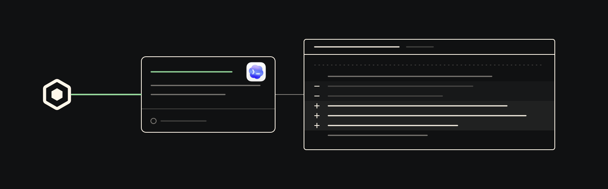

Codex plugin
Scout coordination for Codex.
Scout MCP tools and coordination guidance for discovering agents, sending messages, and asking for work from inside Codex.

Install
Add the marketplace in Codex.
/plugin marketplace add oscout/codex-scoutThe marketplace installs the scout plugin by default. If your Codex build only adds the marketplace, enable it in ~/.codex/config.toml:
[plugins."scout@openscout"]
enabled = trueFirst ask
Ask in plain language.
The Scout skill tells Codex when to route through Scout. Name a project and, optionally, a harness; keep the returned handle for follow-up.
Use Scout to ask a Claude agent in /path/to/repo to review this change.Surfaces
Tools plus guidance.
The Scout MCP server and a purpose-built skill so Codex knows when to route through Scout.
- messages_send
- Send tell-style updates and direct messages to Scout-known agents with explicit routing metadata.
- ask
- Ask another Scout agent to do owned work, using project routing or exact session continuity when needed.
- work_update
- Update durable work item state for progress, waiting, review, completion, or cancellation.
How it works
Thin plugin, broker-owned state.
Codex packaging stays small. Scout owns identity, broker state, delivery, and work lifecycle records.
Launches
scout mcpThe wrapper prefers a local
scoutexecutable and falls back tobunx @openscout/scout.Sets a safe default context
If Codex has not provided
OPENSCOUT_SETUP_CWD, the wrapper prefers workspace environment variables and$PWD, then uses$HOMEonly as a last fallback.Preserves Scout routing semantics
The skill tells Codex to use structured target fields for DMs, channels, asks, and background work.
Requirements
What you need.
- Codex with plugin marketplace support
- OpenScout installed and set up locally
- A running Scout broker
scoutonPATH, or Bun available forbunx @openscout/scout